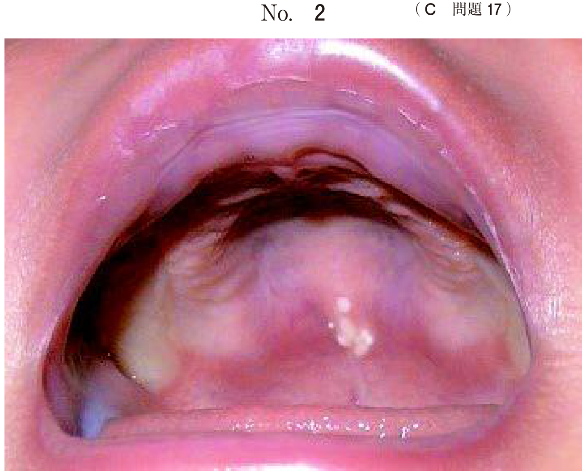
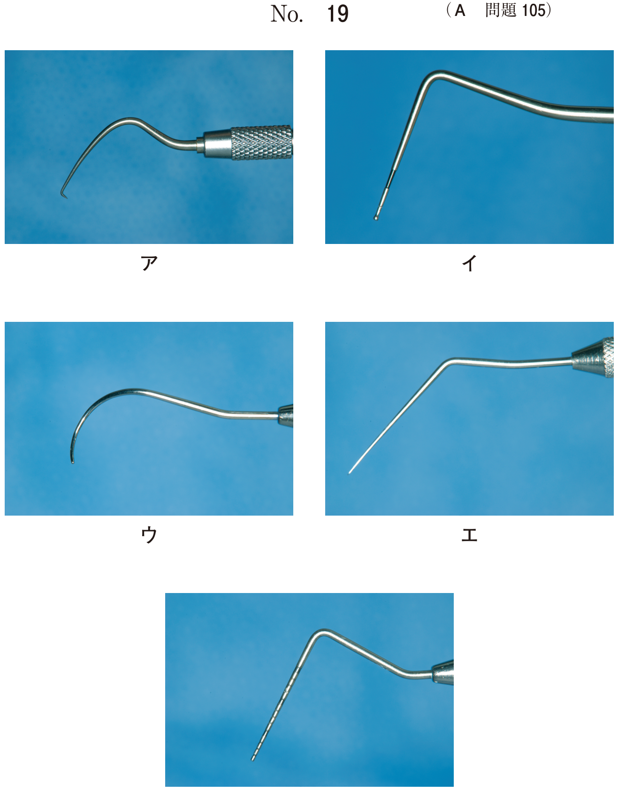
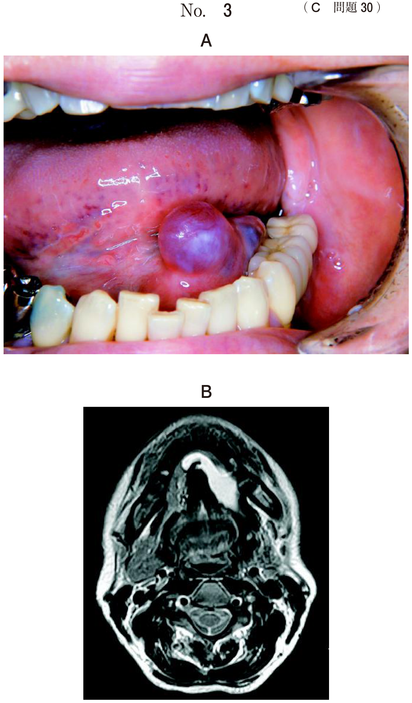
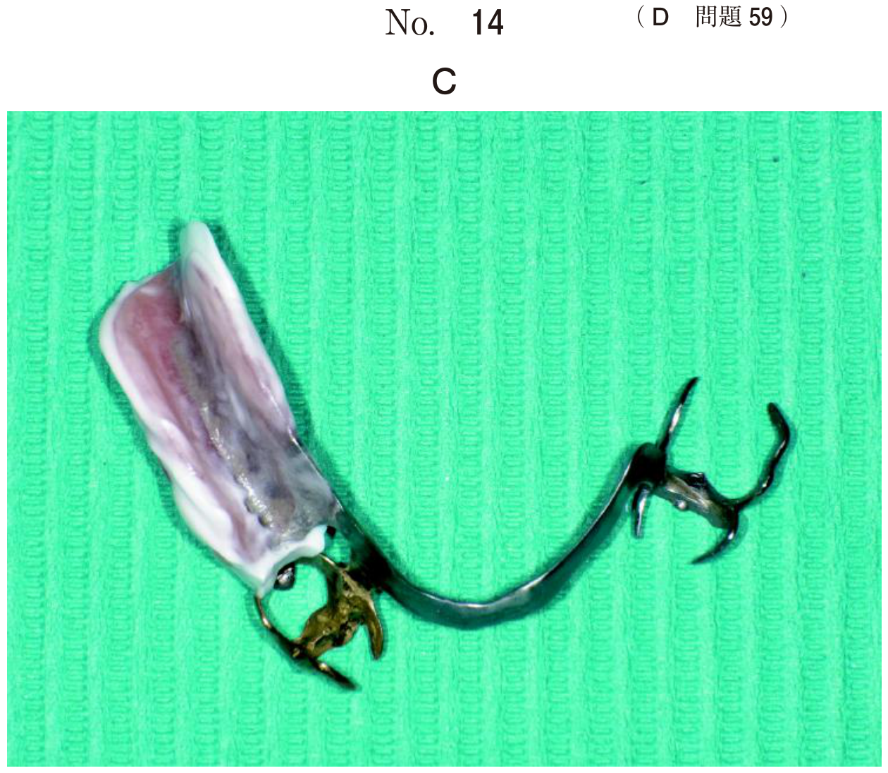

放射性同位元素（RI）を投与し、その分布から臓器や組織の機能を画像化・評価する検査。形態ではなく機能をみる点が特徴。
| 検査 | 放射性医薬品 | 対象疾患・目的 |
|---|---|---|
| 骨シンチ | 99mTc-MDP / HMDP | 骨転移、骨髄炎、疲労骨折 |
| 唾液腺シンチ | 99mTcO4- | 唾液腺機能、Sjögren症候群、Warthin腫瘍 |
| 腫瘍シンチ | 67Ga-citrate | 腫瘍、炎症、悪性リンパ腫 |
| FDG-PET/CT | 18F-FDG | 悪性腫瘍、転移検索 |
シンチグラフィの組合せで正しいのはどれか。1つ選べ。
【解説】99mTc-MDPは骨シンチグラフィに使用され、骨転移の検出に用いる。99mTcO4-は唾液腺シンチ、67Ga-citrateは腫瘍・炎症シンチ、123I-NaIは甲状腺シンチに使用。
99mTc-MDP（または99mTc-HMDP）を静注し、骨代謝が亢進した部位を検出する。
骨シンチは骨の「代謝」を検出するため、形態変化より早期に病変を検出できる。
99mTc-MDPを用いた核医学検査で判定できるのはどれか。2つ選べ。
【解説】99mTc-MDPは骨シンチグラフィに使用され、骨代謝が亢進した部位に集積する。骨髄炎の活動性と悪性腫瘍の骨転移の評価に有用。唾液の分泌能は99mTcO4-、軟組織病変は骨シンチでは評価できない。
シンチグラフィの断層撮像法。検出器を回転させて三次元画像を作成する。
使用核種：99mTc（テクネチウム）が最も多い。
SPECT頭部矢状断像（別冊No.6）を別に示す。
使用核種はどれか。1つ選べ。

【解説】SPECTで最も多く使用される核種は99mTc（テクネチウム）。半減期6時間で適度な長さ、ガンマ線エネルギーも検出に適している。18FはPET、67Gaは腫瘍シンチ、131Iは甲状腺治療、133Xeは肺換気シンチに使用。
18F-FDG（フルオロデオキシグルコース）を使用し、糖代謝が亢進した部位を検出する。悪性腫瘍の診断に最も有用。
FDGはグルコースの類似物質。悪性腫瘍は糖代謝が亢進しているため、FDGが集積する。
正常でもFDGが集積する部位があり、読影時に注意が必要。
口底癌術後の患者に行った検査画像（別冊No.24）を別に示す。
この検査法はどれか。1つ選べ。

【解説】画像はPET/CT。全身の代謝活性を示すPET画像とCT画像が融合されている。脳や膀胱に生理的集積が見られ、異常集積部位を検出できる。術後の再発・転移検索に有用。
右側舌縁部の扁平上皮癌のFDG-PET/CT（別冊No.7）を別に示す。
矢印で示す集積部位はどれか。1つ選べ。

【解説】口蓋扁桃はリンパ組織であり、FDGの生理的集積がみられる部位。舌癌の評価時に、扁桃への生理的集積を転移と間違えないよう注意が必要。両側対称性に集積していれば生理的集積の可能性が高い。
99mTcO4-（過テクネチウム酸）を使用し、唾液腺機能を評価する。
口腔乾燥を主訴として来院した患者の酸刺激前後の唾液腺シンチグラム（別冊No.23）を別に示す。
最も機能低下がみられるのはどれか。1つ選べ。

【解説】唾液腺シンチでは、酸刺激後に唾液分泌とともに99mTcO4-が排泄され、集積が減少する。機能低下した腺では排泄が不良となる。画像で右側耳下腺の排泄が最も不良であれば、右側耳下腺の機能低下を示す。